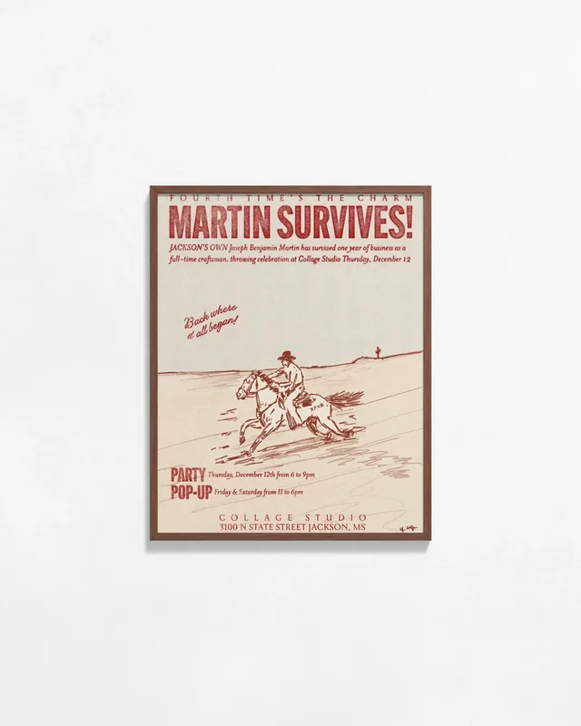

II
The story
He has told it once already, as “Fourth Time’s a Charm”. It belongs here, in full, in his words.
Gap · biography, 150–250 words
How Joseph came to hats, written with him from a recorded conversation. Nothing paraphrased from secondary sources.
Background mentioned in third-party listings is not used until Joseph confirms it and the wording. Read “Fourth Time’s a Charm” on the current site ↗

JM·D·003–004PostersReal work